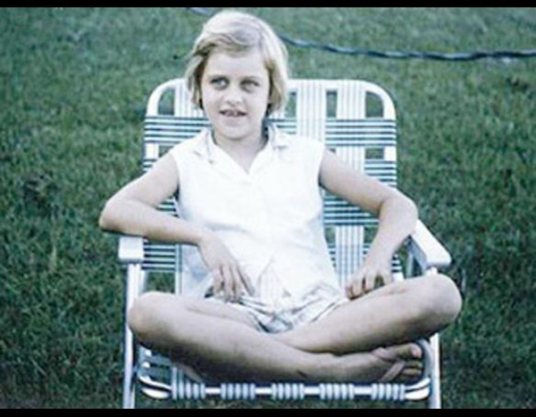
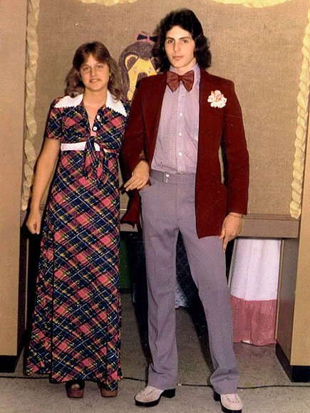
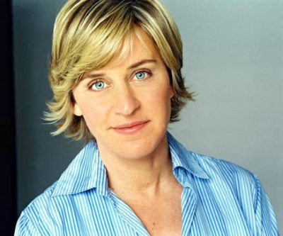

More About Ellen!
Early Life
Born: January 26, 1958 (age 59), DeGeneres was born and raised in Metairie, Louisiana, the daughter of Betty DeGeneres (née Elizabeth Jane Pfeffer), a speech therapist, and Elliott Everett DeGeneres, an insurance agent. She has one brother, Vance, a musician and producer. She is of French, English, German, and Irish descent. She was raised as a Christian Scientist until age 13. In 1973, her parents filed for separation and were divorced the following year. Shortly after, Ellen's mother married Roy Gruessendorf, a salesman. Betty Jane and Ellen moved with Gruessendorf from the New Orleans area to Atlanta, Texas. Vance stayed with his father. On a February 2011 episode of her show, she told her studio audience of a letter from the New England Historic Genealogical Society confirming she is 15th cousin to Catherine, Duchess of Cambridge via their shared common ancestor Thomas Fairfax.
| Year/Decade | Photo |
|---|---|
| 1950's | |
| 1960's |  |
| 1970's |  |
| 1980's |  |
| 1990's |  |
| 2000's |  |
| 2010's | |
| Year/Decade | Photo |
Relationships
Since 2004, DeGeneres has had a relationship with Portia de Rossi. After the overturn of the same-sex marriage ban in California, DeGeneres and de Rossi were engaged, and married in August 2008, at their home in Beverly Hills, California, where they live with their four dogs and three cats. The passage of Proposition 8 cast doubt on the legal status of their marriage, but a subsequent California Supreme Court judgment validated it because it occurred before November 4, 2008. On August 6, 2010, de Rossi filed a petition to legally change her name to Portia Lee James DeGeneres. The petition was granted on September 23, 2010.